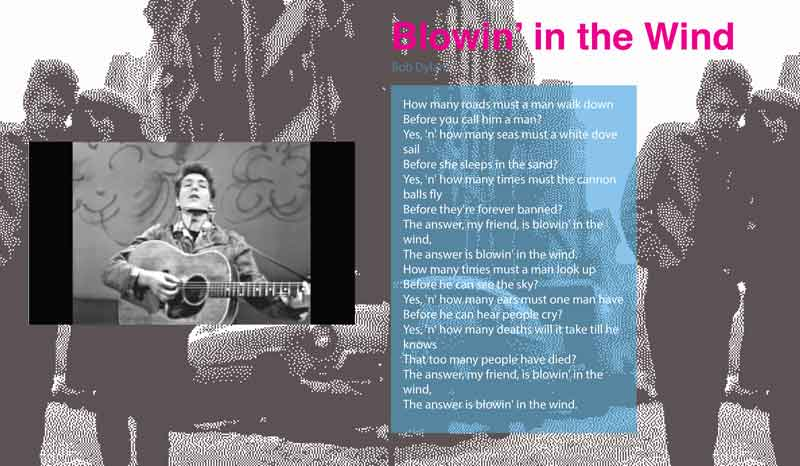
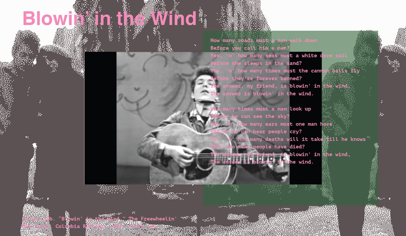
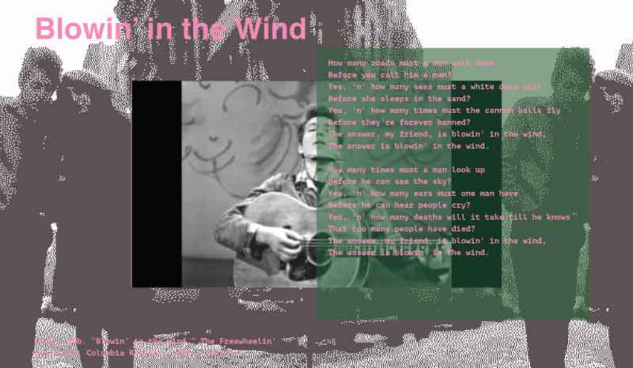
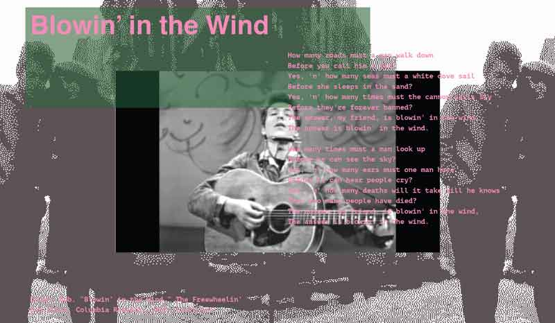
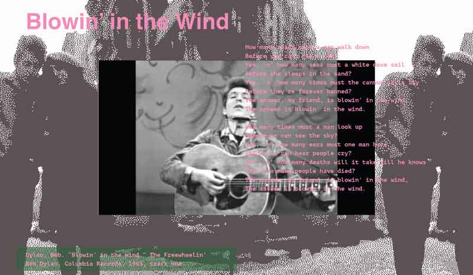

Arthur suggested:
1. More considered colors
2. Lyrics over top of the video
3. More considered title placement





NOTES:
-The green boxes would appear when the text is hovered over, highlighting different pieces of text.
-The lyrics would scroll.
-The background image will have to be tinkered with for the best relationship b/n legibility/texture.